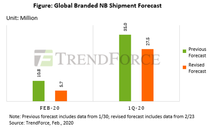
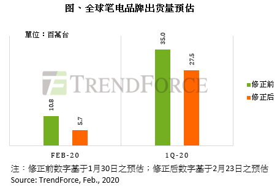
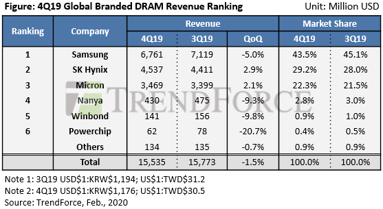
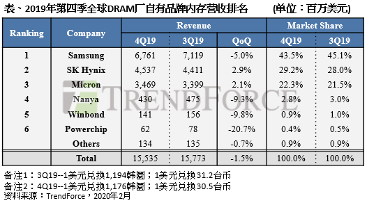
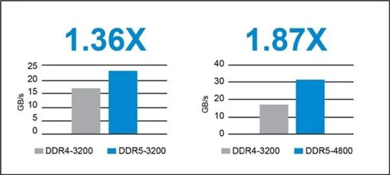
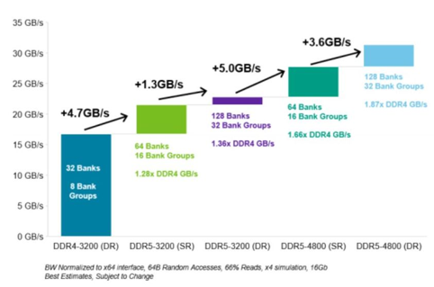

Breaking News
1. Owing to COVID-19 Outbreak, 1Q20 Notebook Computer Shipment Expected to Decline about 26% YoY (TrendForce 2020-02-27)
Under the impact of the COVID-19 outbreak, the notebook supply chain is facing many challenges in work resumption delays, labor shortages, material shortages, and logistic/transportation restrictions. TrendForce is hereby lowering its February notebook shipment forecast from 10.8 million units previously to 5.7 million units, a 47.6% decrease YoY.
During the 1Q20 period, notebook shipment is expected to take the brunt of the impact in February. Assuming that the spread of COVID-19 can be contained, notebook production volume is expected to gradually recover in March, but this may not be enough to offset significant losses in February. TrendForce is therefore further revising its 1Q20 notebook shipment forecast from the previous figure of 35 million units down to 27.5 million units, a 35% decrease QoQ and 26% decrease YoY. If the COVID outbreak were to further affect Chinese notebook manufacturers and related industries, 1Q20 shipment may decrease more than current projections.
…………
Generally speaking, demand for educational-use Chromebooks surfaces in February as bidding wars start. However, with the current shortage of labor and materials, whether brands and ODMs are willing to invest their capacities in making low-ASP Chromebooks remains a major uncertainty. Furthermore, the shipment schedule of Chromebooks must align with the start of the new semester. Should suppliers be unable to ship Chromebooks due to logistic problems, it remains to be seen whether the demand for educational-use Chromebooks, driven by bidding wars, can be deferred to the start of 3Q20.

疫情冲击，2020年第一季笔电出货较去年同期衰退近26% (TrendForce 2020-02-27)
受到疫情影响，笔电供应链面临复工延后、缺工、缺料以及物流运输严格管控等诸多问题，全球市场研究机构集邦咨询将二月份全球笔记本电脑出货量预估由原先的1,080万台，下修至570万台，较去年同期衰退47.6%。
以第一季笔电出货量来看，二月份影响最大，如果在疫情能有效控制的前提下，预期三月份的生产量可望陆续恢复，但仍旧无法弥补二月份的缺口。有鉴于此，集邦咨询将第一季笔电出货量由原先预估的3,500万台，扩大下修至2,750万台，季减近35%，年减约26%。若疫情持续冲击中国制造业，第一季出货量仍有继续下修的可能。
…………
通常二月份开始，教育用Chromebook的标案需求会陆续出现，但在目前缺工缺料的状况下，品牌厂与代工厂是否愿意将产能投入低单价的Chromebook是一大问题。且教育用Chromebook必须搭配开学季出货，若因运输受阻导致无法实时出货，教育用Chromebook的标案需求是否会递延至第三季初，仍有待商榷。

2. South Korea’s Hynix says 800 workers to stay home after trainee had contact with virus patient (Reuters 2020-02-20)
South Korean chipmaker SK Hynix said on Thursday that 800 of its workers had quarantined themselves as a precautionary measure to prevent the spread of the coronavirus, but its production in the city of Icheon has not been affected.
The move came after one trainee had close contact with a virus patient in the southeastern city of Daegu, the epicenter of an outbreak in South Korea.
SK Hynix, the world’s No.2 memory chipmaker which counts Apple Inc and Huawei among its customers, said another trainee also had symptoms of pneumonia. The two trainees tested negative for the virus, but will undergo a second test.
A surge in confirmed cases linked to a local church in Daegu this week sparked fears of wider transmission.
The 800 include 280 trainees, who have not yet started working on production lines, and accounts for a fraction of its workforce of 18,000 people in Incheon, a spokeswoman said.
SK Hynix has closed its training center and hospital in Icheon, southeast of Seoul.
3. 日韩疫情持续加剧 全球半导体产业链影响几何？ (21世纪经济报道 2020-02-27)
目前日韩的半导体巨头三星、SK海力士等并未停工，都在运转中。短期来看，影响尚不明显，但是一旦疫情继续恶化，关键供应的短缺会为全球产业链带来巨大损失。
据记者了解，三星确诊的员工是在手机工厂，并且是试验线，员工并不多，对整体影响不大。三星电子则表示，公司在韩国的芯片和面板工厂未受影响。
日前，SK海力士位于韩国利川工厂的一名新员工曾与大邱市确诊病例有密切接触SK海力士对外表示，该名员工核酸检查结果为“阴性”，为安全起见继续被隔离至3月1日。对于该员工所接触的800名人员都无条件地进行隔离。SK海力士在利川工厂拥有1.8万多名员工，工厂的运营不会受此影响，目前正常运营中。
多位半导体业内人士向21世纪经济报道记者表示，现在日韩政府干预力度没有那么大，工厂都是正常开工，需要保持动态跟踪。
…………
Market Trends
1. Global DRAM Revenue Holds Steady in 4Q19 as Shipment Growth Offsets Price Declines (TrendForce 2020-02-18)
According to the DRAMeXchange research division of TrendForce, the DRAM inventory finally returned to a relatively normal level for most OEMs in 4Q19 after nearly three consecutive quarters of adjustments. As the growth in the industry’s overall DRAM supply will be fairly limited in 2020, buyers have been raising procurement ahead of time. Therefore, despite the relatively strong base period in 3Q19, DRAM suppliers increased their sales bits in 4Q19. This increase was able to largely offset the declines in their quotes. All in all, 4Q19 global DRAM revenue registered a minor decrease of 1.5% QoQ**, showing a relatively flat trend compared to the previous quarter.
Now, in the first quarter of this year (1Q20), contract prices of PC DRAM and server DRAM products have rallied as PC OEMs and cloud service providers remain fairly proactive in building up their inventories. However, DRAM suppliers’ shipment performances in 1Q20 will be affected by the usual seasonal headwinds of Lunar New Year break in Asia. The three dominant DRAM suppliers are expected to post a QoQ decline in their sales bits for the period.**
…………

2019年第四季量增抵销价跌影响，DRAM产值较前季近持平（TrendForce 2020-02-18)
根据集邦咨询半导体研究中心(DRAMeXchange)调查显示，经过2019年近三个季度的调整，各终端产品的DRAM库存在第四季普遍回归正常水平，加上2020年DRAM供给增幅有限，采购端开始提前拉货。因此，即便在2019年第三季的高基期下，第四季DRAM供应商的销售位元出货量(sales bit)仍上升，由于量增结果，抵销整体平均报价的下跌，使得第四季DRAM营收仅小幅下滑1.5%，与上季约略持平。
展望2020年第一季，采购端的备货意愿明显，带动PC DRAM、服务器DRAM合约价格反转向上。不过在整体出货表现方面，第一季适逢亚洲年节假期，本就为传统淡季，三大DRAM原厂皆预期第一季出货量将较前一季衰退。
在原厂获利能力方面，由于2019年第四季价格较前季下滑7-8%，除三星以外，DRAM供应商的营业利益率普遍呈现衰退。三星除了1Ynm逐渐放量所带来的成本优势(cost reduction)，亦受惠于1Xnm服务器产品认列费用回补，营业利益率由第三季的33%上升至36%。SK海力士则由于1Ynm产品仍在初始放量阶段，良率较低导致成本受到拖累，营业利益率由24%持续下滑至19%，跌幅为三大厂中最大。美光本次财报季区间(9月至11月)的报价跌幅约略等同于韩系厂商(财报季区间为10月至12月)，营业利益率从上季度的24%下跌至20%。
………

2.存储器价格两样情，NAND涨势更胜DRAM (科技新报 2020-02-04)
尽管目前市场担心疫情将影响今年首季行情，但业内人士认为存储器价格涨势仍然可期。
…………
但若以工厂据点来看，三大DRAM厂，仅SK海力士的无锡厂区可能受到影响，且距离武汉较远，冲击应不大，目前工人上工情况正常，产线仍持续运作，没有停工疑虑，主要观察重点放在物流系统是否因封城受阻，导致产线停摆。不过部分重要厂商已被政府颁发特殊许可通行证，产业冲击应有限。
而NANDFlash冲击则较大，长江存储与武汉新芯，目前已宣布非一线人员外可在家上班，而厂务人员则进行排班，并严格管制人员进出。且受到封城影响将更严重，人员复工会有隐忧，虽然其市占率并不高，但若今年扩产计划受阻，对存储器涨势将会有所支撑。但厂商也可望会获得中国政府支援，并没有太悲观。
目前市场认为今年存储器产业将会复苏，而NAND的反弹要比DRAM更快。在近期三星的财报会议中也提到，今年NAND有望出现20%以上成长，而DRAM也可能有近10%的反弹，美光此前也有类似的看法，WD的看法更乐观，认为NAND非常紧俏，价格增加上看35%。
而相对DRAM表现就比较没有那么强劲，不过目前来看，这样的趋势能否持续多久仍然是个问题，若今年第一季需求真的显弱，那么下半年也可能会受到影响。
Vendor News
1.美光交付全球首款量产的LPDDR5芯片 (美光科技2020-02-06)
美光科技今日宣布已交付全球首款量产的低功耗DDR5 DRAM芯片，并将率先搭载于即将上市的小米10智能手机。
作为小米的内存技术合作伙伴，美光所供应的LPDDR5 DRAM芯片将带来更低的功耗和更快的数据读取速度，以满足消费者对于智能手机中人工智能 (AI) 和 5G 功能日益增长的需求。
…………
美光该款 LPDDR5 DRAM芯片将有效应对汽车、客户端电脑以及5G和AI应用专属网络系统等各类市场对于更高内存性能和更低功耗的需求。与LPDDR4x内存相比，LPDDR5可以降低超过20%的功耗。
…………
美光目前出货给客户的LPDDR5内存容量包括6GB、8GB和12GB，数据传输速率为5.5Gbps和6.4Gbps。美光在 2020 年上半年还将通过基于 UFS 的多芯片封装 (uMCP5) 把 LPDDR5 内存应用于中高端智能手机。多芯片封装的 LPDDR5可延长电池续航时间，并提供更高带宽，以支持此前只有旗舰机型才能配备的高性能图像处理功能。
2.Micron Shipping LPDDR5 DRAM (ANANDTECH 2020-02-06)**
Micron has announced their first LPDDR5 DRAM is in mass production and now shipping to customers.The new RAM is significantly faster and more power efficient than LPDDR4x.One of the first products to use the new LPDDR5 will be the upcoming Xiaomi Mi 10 smartphone.
Micron’s LPDDR5 is available in 6GB, 8GB and 12GB packages, with speeds of 5.5Gbps and 6.4Gbps per pin. The faster speed grade is a 50% improvement over their fastest LPDDR4x products (4266Mbps per pin), and Micron also claims better than 20% reduction in power use compared to LPDDR4x. Micron will also soon be offering multi-chip packages pairing LPDDR5 with UFS-based flash storage; these products will be available sometime during the first half of the year.
The most visible applications for LPDDR5 will be this year’s crop of flagship smartphones, but Micron is also targeting automotive and networking applications with the obligatory references to 5G and AI driving demand for faster memory.
3.Samsung Begins Mass Production of Industry’s First 16GB LPDDR5 DRAM for Next-Generation Premium Smartphones (Samsung 2020-02-25)
Samsung Electronics, a world leader in advanced memory technology, today announced that it has begun mass producing the industry’s first 16-gigabyte (GB) LPDDR5 mobile DRAM package for next-generation premium smartphones. Following mass production of the industry-first 12GB LPDDR5 in July, 2019, the new 16GB advancement will lead the premium mobile memory market with added capacity that enables enhanced 5G and AI features including graphic-rich gaming and smart photography.
Data transfer rate for the 16GB LPDDR5 comes in at 5,500 megabits per second (Mb/s), approximately 1.3 times faster than the previous mobile memory (LPDDR4X, 4266Mb/s). Compared to an 8GB LPDDR4X package, the new mobile DRAM delivers more than 20-percent energy savings while providing up to twice the capacity.
Samsung’s 16GB LPDDR5 mobile DRAM package consists of eight 12-gigabit (Gb) chips and four 8Gb chips, equipping premium smartphones with twice the DRAM capacity found in many higher-end laptops and gaming PCs today. Along with the blazing-fast performance, the industry’s largest capacity supports dynamic and responsive game play as well as ultra-high-resolution graphics on premium smartphones for highly immersive mobile gaming experiences.
4.Samsung Introduces New Solution High-Speed DRAM ‘Flashbolt’ (koreatechtoday 2020-02-06 )
Samsung Electronics released on Tuesday its new high-speed DRAM “Flashbolt” memory chip designed for high-performance computing systems and artificial intelligence-based big data analysis.
Samsung claims that its Flashbolt is the industry’s first third-generation 16-gigabyte (GB) High Bandwidth Memory-2E (HBM2E) memory chip delivering twice the capacity of its predecessor Aquabolt.
The Korean tech company said that with a new solution called Flashbolt, the firm upped the ante for fast data transmission speed and premium memory for big data.
The new Flashbolt contains twice the capacity of Aquabolt, a second-generation 8GB HBM2, sharply increasing performance and power efficiency. Flashbolt uniquely maximizes computing systems and help tech manufacturers to advance their AI-powered data analytics, supercomputers, and graphics systems.
To achieve the solution’s 16GB capacity, Samsung created eight layers of 10-nm class (1y) 16-gigabit (Gb) DRAM dies are stacked on top of a buffer chip offering a data transmission speed of 3.2-gigabits-per-second (Gbps) with 413-gigabytes-per-second (Gbps) data bandwidth per stack.
…………
5.AMD takes a bite out of Intel’s PC market share across Europe amid microprocessor shortages, rising Ryzen (The Register 2020-02-21)
Intel is losing ground to AMD in every corner of the European PC industry serviced by the channel, according to official sales stats from distributors.
Figures collated by Context for Western Europe, for the fourth quarter of 2019, reveal shipments of Intel processors for notebook, desktop and workstations fell 2.3 per cent year-on-year to 5.34 million units, with market share plunging to 84.1 per cent from 91.1 per cent. This was in a market that grew 5.8 per cent to 6.348 million.
Given the dynamics of recent years, it will surprise no one that commercial PCs grew 15.2 per cent, via distribution, to 3.568 million in the final quarter. Intel expanded by 8.2 per cent, lowering its market share to 89.3 per cent from 94.8 per cent in Q4 2018. In consumer PCs, the sector fell 4.2 per cent, and Intel in particular was down 14.8 per cent to 2.153 million shipments; its total share of the spoils dropped to 77.5 from 87.1 per cent.
…………
Shortages of Intel CPUs began in the summer of 2018 as it started to switch fabrication plants to new manufacturing processes. Since then, Intel has prioritised supply to high-margin server-grade chips, with hyperscale customers first in line when it comes to component allocation.
…………
6.长鑫存储官网上线DDR4内存芯片产品 (全球半导体观察 2020-02-26)
继2019年9月宣布量产8Gb DDR4后，长鑫存储DDR4内存芯片产品日前已在官方网站上线，包括DDR4内存芯片、LPDDR4X内存芯片、DDR4模组等，并公布了具体产品资料。
据官网介绍，DDR4内存芯片是首颗国产DDR4内存芯片，是第四代双倍速率同步动态随机存储器。相较于上一代DDR3内存芯片，DDR4内存芯片拥有更快的数据传输速率、更稳定的性能和更低的能耗。长鑫存储自主研发的DDR4内存芯片满足市场主流需求，可应用于PC、笔记本电脑、服务器、消费电子类产品等领域。
产品资料显示，长鑫存储DDR4内存芯片单颗容量8Gb，2666 Mbps速率，工作电压1.2V，工作温度0 °C ~ 95 °C，78 - ball FBGA与96 - ball FBGA两种封装规格。长鑫存储称该产品特点包括高速数据传输、多领域应用支持、多产品组合、可靠性保障等。
…………
New Technology
1.DDR5开启内存新时代 各厂商竞相发力布局 (2020-02-21)
DDR指的是双倍数据传输率（Double Data Rate），DDR已经由DDR1、DDR2、DDR3、DDR4发展到DDR5。随着现代计算机能力的不断发展，推动着存储器件朝着更高性能的方向发展。DDR5作为DDR4的后继者，能支持更快的传输速率和更高的容量。
JEDEC于2016年就开始制定DDR5 SDRAM规范了，不过到目前为止，DDR5标准仍然处于完善期，JEDEC还没有公布它的最终版本，预计它将会在今年正式完成DDR5标准的制定。反而是LPDDR5快了一步，在去年2月份标准就已经正式公布，并且有厂商已经推出了实际产品，并且在今年已经有移动处理器支持它了。
美光的DDR5技术文档也得以让我们一窥DDR5内存的特性。首先，在同样的等效频率下DDR5内存能够提供更高的有效带宽，比如同样处于3200MT/s下，DDR5-3200的有效带宽比DDR4-3200的要高出36%；其次是DDR5(在JEDEC标准范围内）的等效频率能够去到更高，可以达到DDR5-6400，而在DDR5-4800时，其有效带宽就已经是DDR4-3200的1.87倍了。
…………

